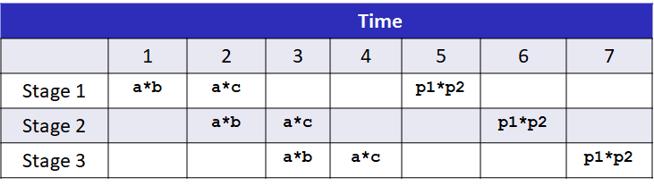

优化程序性能
这里所说的优化程序性能，不是说优化程序的算法，使得程序的性能从提升到，而是说把程序的性能从提升。也就是说，这里关系的不是程序渐进关系，而是关系前面的系数。
这里讲的优化方式，大多是针对有循环结构的，所以这里我们引入度量标准每元素的周期数（Cycles Per Element，PCE），作为一种表示程序性能并指导我们改进代码的方法。
妨碍编译器优化的两个因素
内存别名使用
内存别名使用指的是两个指针指向同一个内存位置的情况，在只执行安全的优化中，编译器必须假设不同的指针可能会指向内存中的同一个位置。所以编译器不会把下面的代码
void twiddle(long *xp, long *yp){
*xp += *yp;
*xp += *yp;
}
优化成下面的代码。
void twiddle(long *xp, long *yp){
*xp += 2* *yp;
}
这是因为如果xp和yp如果指向同一个内存，那么前者使xp增加了3倍，而后者是xp增加两倍。
函数调用
函数调用可能有副作用，也就是函数可能维护了一个内部的状态，导致调用它的次数会改变程序的行为，如rand函数。所以，编译器一般会假设最糟糕的情况，并保存所有的函数调用不变。如编译器下面的代码
long func(){
return f() + f() + f() + f();
}
优化成下面的代码。
long func(){
return 4 * f();
}
常用的优化方法
代码移动
代码移动主要是正对要执行多次，但计算结果不会改变的计算。因而可以将计算移动到代码前面不会被多次求值的部分。如下面的例子。
void lower(char *s){
size_t i;
for (i = 0; i < strlen(s); i++)
if (s[i] >= 'A' && s[i] <= 'Z')
s[i] -= ('A' - 'a');
}
这里编译器无法优化对strlen的调用，所以这里每一次循环都会调用strlen，整个算法的复杂度就变为了。我们可以提前计算strlen的值，这样就可以把算法的复杂度降低到。
降低计算强度
这里指的是使用开销小的运算来替代开销大的运算，如我们可以使用左移右移来替换乘除2的幂次方的运算。下面是一个例子。
for (i = 0; i < n; i++){
int ni = n * i;
for (j = 0; j < n; j++)
a[ni + j] = b[j];
}
上面的代码可以优化成下面这种形式。
int ni = 0;
for (i = 0; i < n; i++){
for (j = 0; j < n; j++)
a[ni + j] = b[j];
ni += n;
}
这里，利用了循环，把乘法使用加法替代。这种优化编译器可以完成。
重复利用部分计算结果
这个没什么好解释的，看看下面的例子。
/* Sum neighbors of i,j */
up = val[(i - 1) * n + j];
down = val[(i + 1) * n + j];
left = val[i * n + j - 1];
right = val[i * n + j + 1];
sum = up + down + left + right;
上面的代码可以优化为下面的代码。
long inj = i * n + j;
up = val[inj - n];
down = val[inj + n];
left = val[inj - 1];
right = val[inj + 1];
sum = up + down + left + right;
为了测试性能，我们先定义了一些抽象的数据结构。
#define data_t int
#define IDENT 0
#define OP +
typedef struct{
size_t len;
data_t *data;
} vec,*vec_ptr;
int get_vec_element(vec *v, size_t idx, data_t *val){
if (idx >= v->len)
return 0;
*val = v->data[idx];
return 1;
}
下面是测试的基准程序，即什么优化都不做的程序。
void combine1(vec_ptr v, data_t *dest){
long int i;
*dest = IDENT;
for (i = 0; i < vec_length(v); i++){
data_t val;
get_vec_element(v, i, &val);
*dest = *dest OP val;
}
}
我们可以先对其做一些基础的优化。
void combine4(vec_ptr v, data_t *dest){
long i;
long length = vec_length(v);
data_t *d = get_vec_start(v);
data_t t = IDENT;
for (i = 0; i < length; i++)
t = t OP d[i];
*dest = t;
}
下面讲一讲进一步的优化。
循环展开
讲循环展开，就不得不先讲一讲流水线。虽然在代码中乘法是一个操作，但是在实际的硬件中，乘法被分为了几个操作，并且，这几个操作之间是可以并行的。所以，利用这个性质，可以提高乘法的速度。例如，如果一个乘法器有三个步骤，每个步骤占一个时钟周期。要计算下面一段代码。
long mult_eg(long a, long b, long c){
long p1 = a * b;
long p2 = a * c;
long p3 = p1 * p2;
return p3;
}
采取流水线，可以得到下面的顺序。

可以看出，通过流水线，我们可以把本来要9个时钟周期才能完成的计算降低到了7个时钟周期。但我们上面的代码没有办法使用流水线，因为每一次循环，我们需要前一次计算的结果。为了使用流水线，我们把代码修改为下面的形式。
void unroll2aa_combine(vec_ptr v, data_t *dest){
long length = vec_length(v);
long limit = length - 1;
data_t *d = get_vec_start(v);
data_t x = IDENT;
long i; /* Combine 2 elements at a time */
for (i = 0; i < limit; i += 2)
{
x = x OP(d[i] OP d[i + 1]);
} /* Finish any remaining elements */
for (; i < length; i++)
{
x = x OP d[i];
}
*dest = x;
}
多个累积变量
上面的代码只使用了一个变量累积，感觉上，如果使用多个变量来累积，会提高运算速度，我们可以把代码修改为下面的版本。
void unroll2a_combine(vec_ptr v, data_t *dest){
long length = vec_length(v);
long limit = length - 1;
data_t *d = get_vec_start(v);
data_t x0 = IDENT;
data_t x1 = IDENT;
long i; /* Combine 2 elements at a time */
for (i = 0; i < limit; i += 2){
x0 = x0 OP d[i];
x1 = x1 OP d[i + 1];
} /* Finish any remaining elements */
for (; i < length; i++){
x0 = x0 OP d[i];
}
*dest = x0 OP x1;
}
下面给出测试结果。
其中，unroll 2*1这个程序没有写出来，因为它和前面一样，也不能利用流水线，因为每一次乘法都依赖于前面计算的结果。下面两行表示延迟界限，这个界限是因为一系列的操作需要严格顺序执行。吞吐量界限表示处理器功能单元的原始计算能力，界限是程序性能的终极限制。例如，乘法的延迟界限是3，因为计算一个乘法需要3个时钟周期；而乘法的吞吐量限制是1，因为乘法使用了3级的流水线，可以认为，满载的时候，一个时钟周期可以完成一个乘法。
使用SIMD指令
SIMD是“Single-Instruction，Multiple-Data（单指令多数据）”的缩写。SIMD执行模型是用单条指令对整个向量数据进行操作。这些向量保存在一组特殊的向量寄存器中，名字为%ymm0~%ymm15。目前AVX向量寄存器长为32字节，因此每一个都可以存放8个32位数或4个64位数，这些数据即可以是整数也可以是浮点数。AVX指令可以对这些寄存器执行向量操作，比如并行执行8组数值或4组数值的加法或乘法。使用SIMD，可以大幅度提升程序的性能，下面是测试结果。
可以看出，使用了SIMD对程序性能的提升非常大。
分支预测
现在处理器在工业界称为超标量，意思是它可以在每个时钟周期执行多个操作，而且是乱序的，意思是指令执行的顺序不一定要与它们在机器级程序中的顺序一致。
所以，对于分支的处理，在一个使用投机执行的处理器中，处理器会开始执行预测的分支目标处的指令。它会避免修改任何实际的寄存器或内存位置，知道确定了实际的结果。如果预测正确，那么处理器就会“提交”投机执行的的指令的结果，把它们存储到寄存器或内存。如果预测错误，处理器会丢掉所有投机执行的结果，在正确的位置，重新开始取指令的过程。这样做会引起预测错误处罚，因为在产生有用的结果之前，必须重新填充指令流水线。
第五章大致的内容就是这些，在CSAPP的课程中，只用了一节课讲授这里的内容。这节课打开了我的视野，第一点是没有想到现在处理器如此复杂；第二点是通过一系列的优化，可以对执行速度提升这么多，如加法的PCE从1.27变化到0.06。